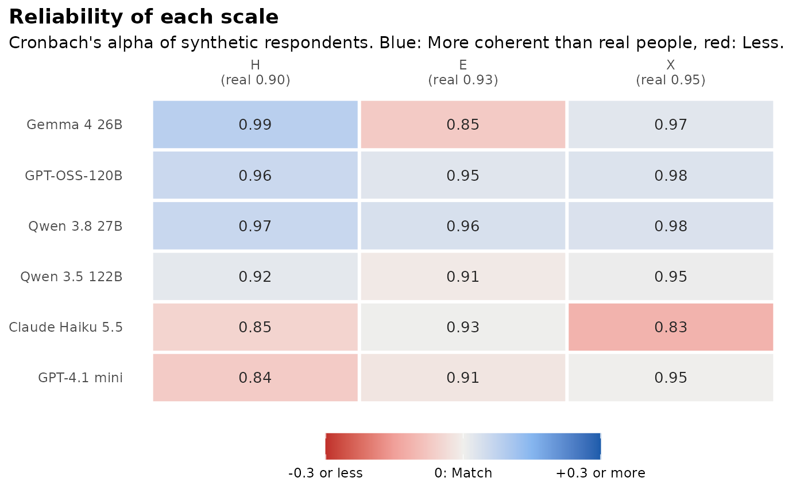

Experimental. synthetic_construct() checks the scales rather than
the items. Structure in authenticity_benchmark() averages over every
pair of items, so a model can score well there and still blur the traits
together or make every scale too coherent. Three checks, for each model
and attempt, against the real data:
Usage
synthetic_construct(
synthetic,
real,
items,
clean_real = FALSE,
careless_rule = NULL,
n_perm = 200,
n_splits = 20,
seed = 1
)Arguments
- synthetic
a named list with one element per model, each a list of attempts (data frames of responses), as in
synthetic_coverage().- real
a data frame of real responses to the same items.
- items
a data frame with one row per item:
item(column name),scale(ortrait, as in hexaco_items), an optionalfacetand an optional logicalreverse.- clean_real
compare against real respondents after removing those flagged by
flag_careless()? The default compares against all real respondents.- careless_rule
optional
rulepassed toflag_careless().- n_perm
number of permutations for the null of Tucker's \(\phi\).
- n_splits
number of real samples for the reference.
- seed
random seed.
Value
An object of class sc_construct: A list with summary (one row
per model: trait_cor_gap, alpha_gap, phi, phi_null, rejects),
scales (one row per model, attempt and scale: alpha, alpha_real,
alpha_gap, phi, phi_null, p), pairs (one row per model,
attempt and pair of scales: cor, cor_real, difference),
reference (the same summary for samples of real people) and
settings. It has print(), tidy() and autoplot() methods.
Details
Trait correlations: The keyed scale means are correlated, and
trait_cor_gapis the mean absolute difference between the synthetic and the real correlations over all pairs of scales (needs two or more scales). The Artificial Societies Benchmark (Chidichimo et al., 2026) reports that language models often change how traits relate.Reliability: Cronbach's alpha of each scale on the keyed answers.
alpha_gapis the synthetic minus the real alpha, averaged over scales. Above 0 means the items hang together more tightly than in real people, which is the "too coherent" pattern, not a better result (Lukauskas & Šarkauskaitė, 2026).Loadings: Each scale's one-factor loadings (first principal component of the item correlations, signed so that the loadings sum to a positive value) are compared with Tucker's congruence \(\phi\). Because loadings of similar size give a high \(\phi\) by chance, each \(\phi\) is read against a permutation null: The synthetic loadings are shuffled over the items
n_permtimes, andpis \((k + 1) / (n_{perm} + 1)\), where \(k\) is the number of shuffled values at or above the observed one (Lukauskas & Šarkauskaitė, 2026).phi_nullis the mean of the null, andrejectsis the share of scales withp < 0.05.
Reference. The same checks on n_splits random samples of real
people (of the median attempt size), each scored against the remaining
real people, show how large the gaps are from sampling noise alone. They
are the "Real (second sample)" rows of reference.
These are diagnostics. They are not part of the benchmark score.
References
Chidichimo, E., Jung, M. J., Wallis, F. P. S., & He, J. K. (2026). Artificial Societies Benchmark: A validation framework for synthetic research. arXiv:2609.30030.
Lukauskas, M., & Šarkauskaitė, V. (2026). Plausible but not valid: A psychometric audit of LLMs as synthetic survey respondents. arXiv:2608.14606.
Tucker, L. R. (1951). A method for synthesis of factor analysis studies (Personnel Research Section Report No. 984). Department of the Army.
Examples
h <- hexaco_items[hexaco_items$trait %in% c("H", "E", "X"), ]
real <- hexaco_real[hexaco_real$country == "Canada", ]
ca <- hexaco_llm[hexaco_llm$country == "Canada" & hexaco_llm$attempt <= 2, ]
syn <- lapply(split(ca, ca$model, drop = TRUE), function(m) split(m, m$attempt))
cs <- synthetic_construct(syn, real, h, n_perm = 50, n_splits = 5)
cs
#> Construct structure (experimental)
#> 120 items in 3 scales, 1708 real respondents.
#>
#> model attempts trait_cor_gap alpha_gap phi phi_null rejects
#> Gemma 4 26B 2 0.64 0.01 0.87 0.82 0.83
#> GPT-OSS-120B 2 0.29 0.04 0.95 0.91 1.00
#> Qwen 3.8 27B 2 0.13 0.04 0.98 0.95 1.00
#> Qwen 3.5 122B 2 0.09 0.00 0.95 0.92 0.67
#> Claude Haiku 5.5 2 0.14 -0.05 0.93 0.88 0.67
#> GPT-4.1 mini 2 0.17 -0.03 0.88 0.84 0.67
#> Real (second sample) 5 0.05 0.00 1.00 0.93 1.00
#>
#> trait_cor_gap: Mean |difference| of the correlations between scales.
#> alpha_gap: Synthetic minus real alpha (above 0 = too coherent).
#> phi: Tucker's congruence of the loadings; phi_null: Its value by chance; rejects: Share of scales with phi above chance (p < 0.05).
gg_construct(cs)
